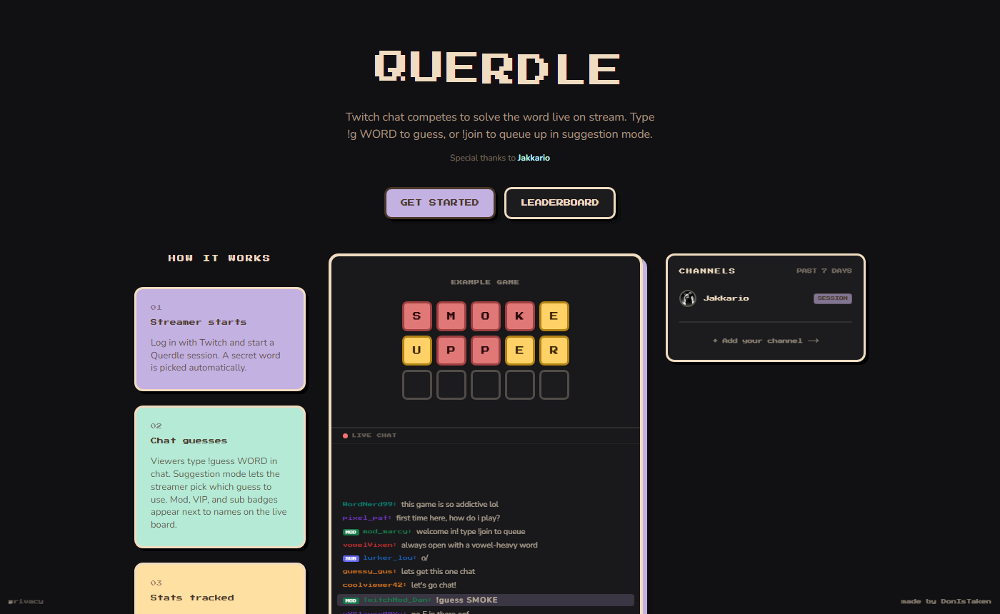
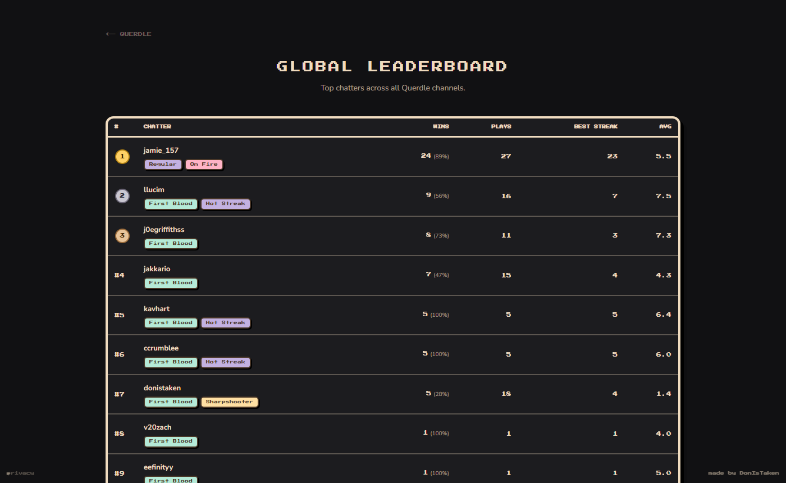
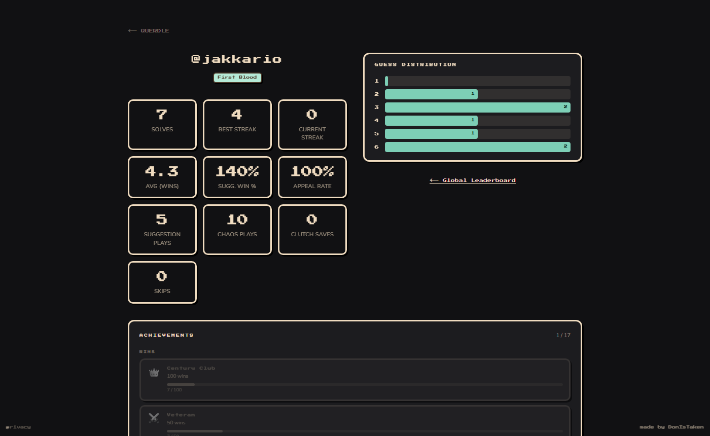

Querdle
A live word-guessing game platform wired directly into Twitch chat — chatters type
!guess, the board plays on stream in real time, and player stats build automatically with
no sign-up required. The IRC constraint that breaks serverless led to the defining
architectural decision: two separate services, one architecture.
Private repo — code samples on request

Context
Overview & problem
Twitch streamers run interactive games with their chat, but no off-the-shelf word-guessing game integrates directly with Twitch IRC. The gap: a structured game engine, a streamer dashboard, and persistent player identity — all wired through Twitch's chat protocol without requiring chatters to sign up anywhere.
Querdle fills that gap. Streamers start a session from their dashboard; chatters join and guess by typing commands in Twitch chat; the board overlay updates live on the stream. Player profiles and stats build automatically across every channel they play — no accounts, no friction. Real streamers run sessions with their communities at querdle.vercel.app.
Product preview
The game, live
Live demo · Suggestion Mode · animated board


Gameplay
Two game modes
Suggestion Mode
- Chatters join a queue with
!join - Current player submits a guess with
!suggest - Streamer reviews and accepts or skips from the dashboard
- Accepted guess scores on the board; queue advances automatically
- Session ends on a win or after six board rows are filled
- Session-wide accepted-guess count used for board-row limit — not per-player count
Chaos Mode
- Any chatter can guess at any time with
!guess - First chatter to solve wins — no queue, no streamer approval
- On a win, a 5-second countdown fires and a new session starts automatically
- Streamer never has to click between rounds
- Mode can be toggled mid-session from the dashboard
- Per-user 3-second cooldown enforced server-side to prevent spam
Player identity
Chatter experience
Identity is the Twitch username. No registration, no email, no password — a chatter's profile is created automatically on their first interaction. Stats accumulate silently across every channel they play in.
Stats & profile
- Wins, win streak, best streak, average guesses across all sessions
- Appeal rate and suggestion win % (Suggestion Mode)
- Clutch saves, channels played, total plays
- Per-channel leaderboard + global leaderboard
- Public profile page with dynamically generated OG image card (Satori)
Achievements & titles
- 18 achievements with unlock state, requirements, and progress bars
- Titles earned ("Wordsmith", "Clutch King", "Legend") displayed next to guesses on stream
- Achievement progress tracks across channels — a win anywhere counts
Broadcast
OBS integration
The game runs inside the stream with no screen-share trickery. Three browser sources cover the full production setup.
Browser sources
-
Board overlay (
/play/overlay/[username]) — transparent background, Wordle tiles only; added as an OBS Browser Source with "Allow transparency" enabled -
Keyboard overlay (
/play/overlay/[username]/keyboard) — live letter-colour hints on a separate OBS layer; shows which letters are correct/present/absent at a glance - Screenshare view — fullscreen branded mode for streamers who prefer to share the play page directly instead of compositing in OBS; word queue panel is automatically hidden in this mode
System design
Architecture & two-service split
Twitch IRC requires a persistent WebSocket connection. Next.js on Vercel is serverless — no shared memory, requests spawn in isolation. These two constraints are incompatible. The solution is a clean split: the Next.js app handles everything HTTP (dashboard, overlays, API routes, auth), while a separate long-running Node.js service on Fly.io owns the IRC connection and all game command logic.
The two services coordinate via HMAC-signed HTTP: Next.js sends
POST /connect, /send, and /disconnect to the worker, each signed
with a shared WORKER_SECRET and a 30-second timestamp window to prevent replay attacks.
The worker writes game events directly to Supabase; all clients (play page, board overlay, keyboard
overlay) receive updates via Supabase Realtime (postgres_changes) — push,
not poll.
Services
- Next.js (Vercel) — App Router, dashboard, overlays, Twitch OAuth, all API routes
- IRC worker (Fly.io) — Fastify 5 +
ws, owns Twitch WebSocket, parses IRC, runs game logic - Supabase — PostgreSQL for state; Realtime channel for push updates to all clients
Reliability
- Boot reconciliation — on restart, the worker fetches all
status='active'sessions and reconnects to each IRC channel automatically; no manual recovery - HMAC replay protection — all Next.js → worker calls signed + timestamped; 30-second window rejects stale replays
- Chaos auto-restart — win → Realtime
UPDATEonsessions.status→ play page detects it → 5 s countdown → new session; the streamer never clicks between rounds
Engineering
Key technical decisions
Answer word never sent to client
- The answer lives in
sessions.word— stripped from every API response before it leaves the server - The client receives only
TileResult[]arrays: correct / present / absent states per tile - Cheating is structurally impossible, not just discouraged — there is nothing to intercept
- The word queue panel is hidden in screenshare and OBS overlay modes
Atomic stat updates via Postgres RPC
- All chatter stat writes go through a single
apply_chatter_eventPostgres function - Before this, six separate
UPDATEstatements could race when the same chatter played on multiple channels simultaneously, causing drift in win counts and average guesses - The RPC serializes everything atomically in one round-trip — also handles guess distribution, appeal rate, clutch-save detection, and skip tracking
Token encryption at rest
- Twitch OAuth
access_tokenandrefresh_tokenare encrypted with AES-256-GCM before being written to Supabase - Encryption key is environment-only (
TOKEN_ENCRYPTION_KEY) — a Supabase breach exposes ciphertext, not usable tokens - All token read/write paths go through
lib/twitch/encrypt.ts; nothing touches the raw token outside that module
OG image constraints (Satori)
- Each chatter's public profile generates a rich social preview card via
next/og(Satori) - Cards show username, top title, solve count, best streak, and average guesses
- Required working within Satori's layout constraints: flex-only (no CSS Grid), no
gapshorthand, pre-loaded fonts, no external image URLs
Session-wide guess count
- Board-row limit in Suggestion Mode is enforced by
getSessionGuessCount(sessionId)— the count of all accepted guesses in the session, not per-player - Using per-player count was a subtle bug: a chatter whose single guess happened to be the 6th board row would incorrectly trigger game-over for the entire session
Unicode monospace IRC font
- All outgoing bot messages pass through
toMonospace(), converting A–Z, a–z, 0–9 to Unicode Mathematical Monospace codepoints (U+1D670+) - Emojis, punctuation, and symbols pass through unchanged
- Result: announcements have strong visual personality in Twitch chat without requiring a custom font on the viewer's end
- Example:
🟩 𝚜𝚑𝚒𝚟𝚊𝚖 𝚜𝚘𝚕𝚟𝚎𝚍 𝚒𝚝 𝚒𝚗 𝟹 𝚐𝚞𝚎𝚜𝚜𝚎𝚜!
Stack
Technologies & integrations
| Layer | Technologies |
|---|---|
| Framework | Next.js 16.2.6 (App Router), React 19, TypeScript |
| Database | Supabase (PostgreSQL + Realtime postgres_changes) |
| Auth | Twitch OAuth 2.0 → JWT in httpOnly cookie; AES-256-GCM token encryption at rest |
| IRC worker | Node.js + Fastify 5 + ws, deployed on Fly.io |
| Styling | Tailwind CSS ("Cozy Pixel Brutalism" custom design system) |
| Client state | Zustand |
| Animations | motion/react (Framer Motion v11+) |
| OG images | next/og (Satori) — dynamic social preview cards per chatter profile |
| Analytics | PostHog + Vercel Speed Insights |
| Hosting | Vercel (Next.js app) + Fly.io (IRC worker) |